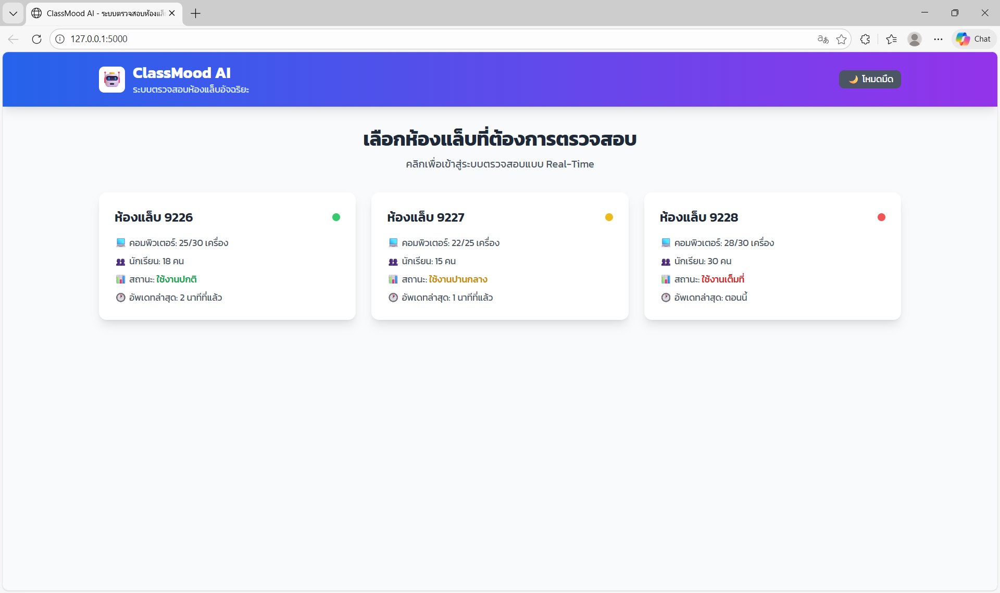
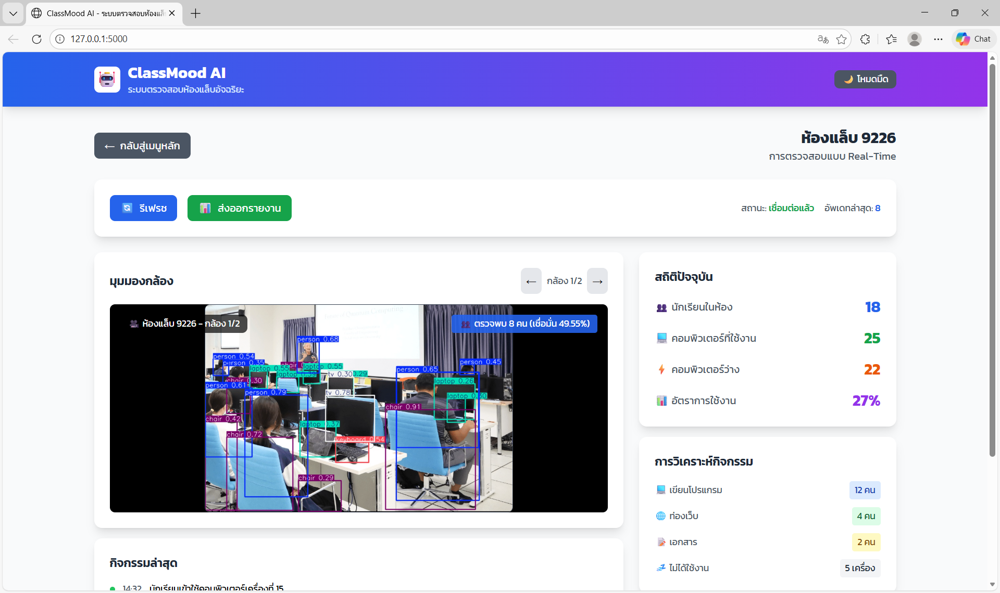

I am a Computer Science student at Khon Kaen University
with a passion for building robust and user-centric digital solutions.
My technical foundation spans Full-stack Web Development, System Design, and Quality Assurance,
with hands-on experience in various frameworks and modern technologies.
Throughout my academic journey, I have consistently applied a systematic approach to problem-solving
across diverse projects from developing scalable web applications to conducting AI-driven research.
I pride myself on being a meticulous and adaptable learner who thrives in collaborative, cross-functional environments.
Committed to continuous improvement,
I am eager to leverage my technical skills and analytical mindset to contribute to innovative projects
and deliver high-quality software.
Programming Languages
JavaScript
TypeScript
HTML
CSS
PHP
SQL
Java
Python
C
Bash/Shell
Web & Frameworks
Frontend / Templating
React
Vue.js
Ionic React
Thymeleaf
Backend
Node.js (Express.js)
Java (Spring Boot)
Laravel (PHP)
Data & AI
Databases
MongoDB (NoSQL)
MySQL
PostgreSQL
Oracle
Data Visualization (Dashboard)
Machine Learning (Basic)
Image Processing (OpenCV)
Testing & Quality Assurance
Methodologies
Manual Testing
UAT
Negative Testing
SDLC
Tools
Postman (API Testing)
Robot Framework
Selenium
Documentation
Test Case Design
Bug Reporting
Issue Tracking
Tools & Platforms
Version Control
Git (GitHub, GitLab)
Containerization
Docker (Learning & Practicing)
Design Tools
Figma
Canva
Website Builders
Wix
Productivity
Microsoft Office (Excel, PowerPoint)
Featured Works
Featured Implementations
MoodMood - Personal Mood Journaling Web Application
2025 - Present • Ionic React, Node.js, MongoDB
Successfully built a secure, real-time mood journaling platform with an intuitive dashboard,
enabling users to track mental health trends through seamless data visualization.
Target: Develop a privacy-focused mental health web application to help users
monitor daily moods, activities, and emotional patterns for self-awareness and well-being.
Action: Designed and developed a full-stack system including NoSQL data modeling,
RESTful APIs, responsive UI, and secure PIN-based authentication.
2025 - Present • Spring Boot, Thymeleaf, PostgreSQL
Built a secure e-commerce and inventory management platform for handmade crafts,
enabling transparent sales tracking and online post-event ordering.
Target: Develop a specialized system for handmade sellers to manage products,
inventory, and customer orders while improving business transparency.
Action: Designed the storefront UI, product workflows, and backend infrastructure,
including authentication, inventory control, and transaction management.
Skills: Java Spring Boot, Thymeleaf, Spring Security, JPA/Hibernate,
PostgreSQL, Postman, GitHub.
Applied Theory: Implemented Spring Security with BCryptPasswordEncoder and
applied ORM using JPA/Hibernate for reliable data management.
Real-Time AI-Based Classroom Student Behavior Analysis System
2025 - Present • Python, AI, Computer Vision
Developing a real-time AI system to analyze student behavior in computer labs,
helping instructors monitor engagement despite physical barriers like monitors
or split-classroom setups.
Target: Build an AI-powered classroom monitoring system that supports
real-time engagement analysis for improved teaching effectiveness.
Action: Conducting R&D on AI models, designing an image processing pipeline,
and developing a web-based dashboard for real-time behavioral visualization.
Skills: AI & Machine Learning, Digital Image Processing, Pose Estimation,
Python, Data Visualization.
Applied Theory: Implemented pose estimation under occlusion constraints and
real-time data processing for low-latency classroom feedback.


Team Collaboration & Large Scale
CP KKU Study Summary System
Jul - Oct 2025 • Express.js, MongoDB
Built a centralized knowledge-sharing platform for students in the College of Computing,
connecting seniors and juniors while simplifying study material sharing.
Target: Create a student-focused platform that supports collaborative
learning and easy access to shared academic resources.
Action: Collaborated in a cross-functional team of 8 (CS & IT), co-designed
UI/UX, and independently developed the Admin Panel including Issue Reporting & Resolution.
Skills: Express.js, MongoDB (NoSQL), Data Serialization, Figma,
Cross-functional Teamwork.
Applied Theory: Applied Data Serialization for efficient handling of PDFs/images
and User-Centered Design principles for student-centered usability.
Classroom Search Website (Faculty of Science, KKU)
Aug - Oct 2025 • Express.js, MongoDB
Developed an intuitive classroom search and navigation website for new students and visitors,
improving campus wayfinding during major events like Science Week.
Target: Build an accessible classroom search tool with integrated navigation
to support visitors and first-year students at KKU.
Action: Collaborated in a team of 8 to design UX/UI and implement backend services,
including Google Maps integration for accurate navigation.
Skills: Express.js, MongoDB, Google Maps API, Postman, UX/UI Design, Deployment.
Applied Theory: Applied User-Centered Design (UCD) and API testing with Postman
to ensure smooth data flow and reliable navigation services.
Responsibilities: Prepared and verified digital thesis files for the KKU Institutional Repository (KKUIR) and managed library information resources.
Technical Skills: Google Workspace (Sheets, Drive), Adobe Acrobat
Cross-functional Collaboration: Worked with library staff and students from 3 faculties
Precision: Ensured data accuracy through detailed document verification
Professionalism: Maintained responsibility and discipline in time-bound tasks
Result: Achieved 100% accuracy and met all deadlines
Activities
Student Development Division, Khon Kaen University
Student Loan Fund Volunteer (SLF Volunteer) - November 2025
Role: Student Volunteer for Student Loan Fund (SLF) Support
Responsibilities:
Provided guidance and support to students regarding the SLF application process.
Assisted in verifying and digitizing application documents into the student loan system.
Skills Developed:
Effective Communication, Consultation, Data Accuracy Verification
Result:
Reduced errors in student loan applications and streamlined the data entry process, enabling faster system integration.